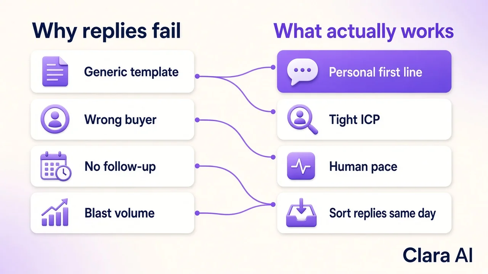

LinkedIn outreach replies for B2B sales teams rise when each message reaches the right decision maker, sounds personal and is followed up at a human pace — not when you blast more identical templates. Cold outreach gets ignored because buyers see the same pitch every day; the fix is better targeting, better writing and steady follow-up, which an AI LinkedIn Outreach Agent can run for you every day.
Sales heads do not lose replies because LinkedIn is broken. They lose them because the message looks like spam. The same five failure patterns show up again and again:
When those five stack, reply rates collapse even if your product is strong. Volume without relevance just fills the ignore pile.

Reply rate is a quality problem first. The teams that get more LinkedIn outreach replies do five things consistently:
None of that requires a huge team. It requires consistency. The hard part for a busy sales head is doing it every day while also closing deals. That is why many B2B teams move the finding, writing and first sorting to an agent, and keep humans for the calls that matter.
For a wider view of how outreach fits with follow-up and reporting, see our guide to AI agents for B2B sales teams. If you are comparing tools and agencies, read best AI LinkedIn outreach agents and LinkedIn automation vs a LinkedIn agency.
Clara's AI LinkedIn Outreach Agent does the daily work that lifts replies without inventing a magic metric. It finds decision makers who match your ideal customer, writes a personal connection request and message for each one, follows up at a human pace, reads replies and alerts you on WhatsApp when a buyer is interested. Your team only joins warm conversations.
We measure that work on the full funnel, not on messages sent. For Haique Surfaces, the agent reached 345 people as of 21 Oct 2026: 107 accepted (31%) and 14 replied. For Sanjeet Ray, a business coach, 149 invites in October 2026 became 43 connections, 12 conversations and 3 warm leads. Those are honest, dated numbers you can hold against your own pipeline. Results always depend on your offer and market, so we never promise a fixed meeting count.
That is different from a simple automation tool that only fires the sequence you wrote. An agent also does the thinking: who to contact, what to say and which replies matter. Step-by-step detail is in our post on an AI agent for LinkedIn lead generation.
This approach fits B2B founders and sales heads who win clients through LinkedIn conversations and need a steady flow of replies from real buyers. It works best when one new client is worth a meaningful amount, so a handful of good conversations each month pays for the effort.
It is not a fit for consumer products sold to the public, one-off posting or branding campaigns, or teams with no budget for a paid monthly service. If you only want more connection requests and do not care who replies, blasting will look busy and still fail.
If you also want buyers to find you on Google and in AI search answers, our AI SEO Agent publishes a helpful post every day. Clara AI is a team of 14 that builds and runs AI agents for 19 businesses. Book a free demo and we will show you the agent working on your own target buyers. If we are not a fit, we will tell you.